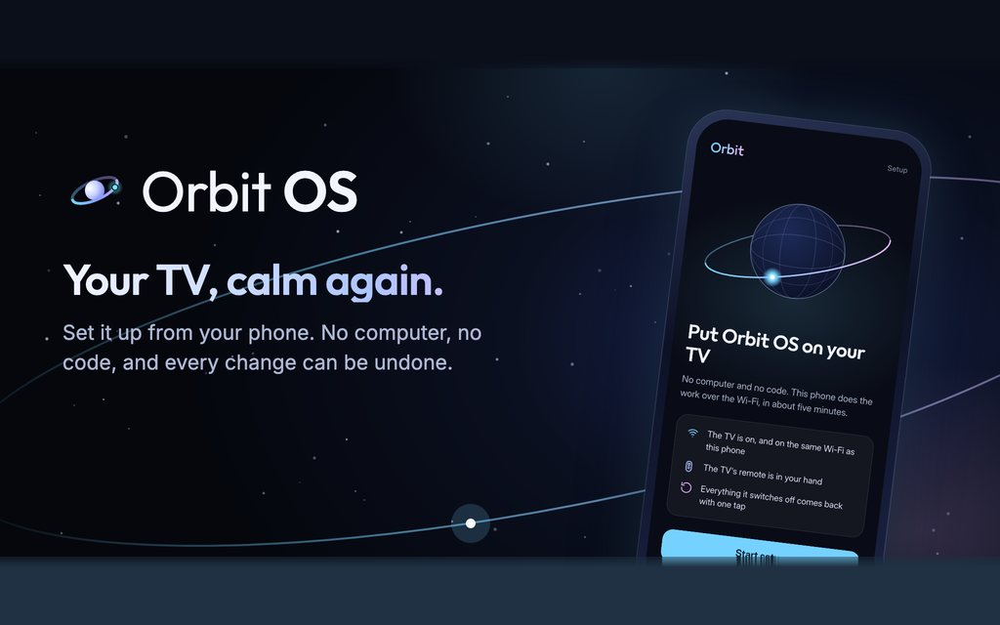

Orbit OS: setting up a Google TV from a phone, with one-tap undo
A case study by Shivam Anil Jha · AI architect & full-stack developer, Mumbai · 16 November 2026

- What
- A free Android app: a smart TV remote that also sets the TV up
- For
- Google TV and Android TV sets, from a phone on the same Wi-Fi
- Built with
- Flutter and Dart (with a pure-Dart ADB client), React and TypeScript, Java for the TV apps, Firebase
- Licence
- Open source, GPL-3.0
- Status
- Live on Google Play since 14 November 2026; code public since 15 November 2026
The problem
A new Google TV starts with a home screen full of sponsored banners, rows nobody asked for and dozens of preinstalled apps that wake up with the TV. The fixes that exist assume a computer, a cable and ADB commands typed by hand, with no record of what was changed and no easy way back. Most families never try, and the ones who do can end up with a TV that boots to an empty screen.
What Orbit OS does
- Sets the TV up from the phone over the home Wi-Fi: no computer, no cables, no code. It asks five plain questions and shows the whole plan before it changes anything.
- Puts a calm home screen (Orbit Home) on the TV with only the apps the family uses, and about 30 free Hindi Live TV channels from the broadcasters' own streams.
- Switches off the preinstalled apps you agree to, never deleting them, and never touching the parts Android needs.
- Undoes everything with one tap, and can back up the TV's original setup to the user's own Google Drive.
- Works as a phone remote: roll a globe to move, tap for OK, and the phone's volume buttons turn the TV up and down, at home or, after an optional Google sign-in, from anywhere.
How it works
The phone app is written in Flutter. It talks to the TV with a small ADB client written in pure Dart, so no native ADB binary ships inside the app. The user turns on the TV's developer options with its own remote and presses Allow once; from then on, the phone drives two scripts on the TV: one that installs and sets up, and one that undoes.
Safety is in the order of operations. Every change is written to an undo record before it happens. The stock home screen is switched off only after Orbit Home has started on the TV, so the TV can never boot to an empty screen. The setup screens on the phone are a React and TypeScript interface running inside the app, which reads a line-by-line progress protocol from the TV and shows each step as it happens. The TV side, Orbit Home and Orbit Live TV, is written in Java.
What may be switched off comes from one catalogue in the code, grouped as ads and tracking, apps nobody uses, apps woken at every start, and the stock home screen, plus a list of packages that must never be touched. On TVs it has not been tested on, Orbit offers only the changes known to be safe on any TV.
Measured on the test TV
On a Xiaomi TV A Pro with Google TV 14, in daily use:
Open source
The phone app, the TV apps, the setup scripts and the website are public on GitHub under the GNU GPL v3.0. The repository has contributor guides, issue forms for TV reports, and a privacy policy that says what it means: no ads, no analytics and no trackers.
For people who want to do it by hand, the Orbit OS website has plain guides: removing ads from the Google TV home screen, debloating Google TV and Android TV and cleaning up a Xiaomi TV.
← Shivam Anil Jha's portfolio · Who is Shivam Anil Jha?